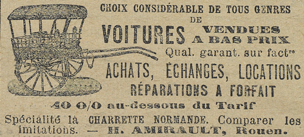

Des heures s’écoulèrent. Un souffle frais qui montait de la mer et flottait sur le plateau leur caressait le visage. En face d’eux, au-delà d’un grand verger clos de murs, et parmi des plaines tout ensoleillées de colza, une dépression leur permettait de voir, à droite, la ligne blanche des hautes falaises jusqu’à Fécamp ; à gauche, la baie d’Étretat, la porte d’Aval et la pointe de l’énorme Aiguille.
Il lui dit doucement :
« Ne soyez pas triste, ma chère bien-aimée. La vie est si belle à notre âge, et elle le sera plus encore pour nous lorsque nous aurons aboli tous les obstacles. Ne pleurez pas. »
Elle essuya ses larmes et tenta de sourire en le regardant. Il était mince comme elle, mais large d’épaules, à la fois élégant et solide d’aspect. Sa figure énergique offrait une bouche malicieuse et des yeux brillants de gaieté. Vêtu d’une culotte courte et d’un veston qui s’ouvrait sur un maillot de laine blanc, il avait un air de souplesse incroyable.
– Raoul, Raoul, dit-elle avec détresse, en ce moment même où vous me regardez — vous ne pensez pas à moi ! Vous n’y pensez pas après ce qui vient de se passer entre nous ! Est-ce possible ! À quoi songez-vous, mon Raoul ?
Il dit en riant :
– À votre père.
– À mon père ?
– Oui, au baron d’Étigues et à ses invités. Comment des messieurs de leur âge peuvent-ils perdre leur temps à massacrer sur une roche de pauvres oiseaux innocents ?
– C’est leur plaisir.
– En êtes-vous certaine ? Pour moi, je suis assez intrigué. Tenez, nous ne serions pas en l’an de grâce 1894 que je croirais plutôt… Vous n’allez pas vous froisser ?
– Parlez, mon chéri.
– Eh bien, ils ont l’air de jouer aux conspirateurs ! Oui, c’est comme je vous le dis, Clarisse… Marquis de Rolleville, Mathieu de la Vaupalière, comte Oscar de Bennetot, Roux d’Estiers, etc., tous ces nobles seigneurs du pays de Caux sont en pleine conjuration.
Elle fit la moue.
– Vous dites des bêtises, mon chéri.
– Mais vous m’écoutez si joliment, répondit Raoul, convaincu qu’elle n’était au courant de rien. Vous avez une façon si drôle d’attendre que je vous dise des choses graves !…
– Des choses d’amour, Raoul. Il lui saisit la tête ardemment.
– Toute ma vie n’est qu’amour pour toi, ma bien-aimée. Si j’ai d’autres soucis et d’autres ambitions, c’est pour faire ta conquête ; Clarisse, suppose ceci : ton père, conspirateur, est arrêté et condamné à mort, et tout à coup, moi, je le sauve. Après cela, comment ne me donnerait-il pas la main de sa fille ?
– Il cédera un jour ou l’autre, mon chéri.
– Jamais ! aucune fortune… aucun appui…
– Vous avez votre nom… Raoul d’Andrésy.
– Même pas !
– Comment cela ?
– D’Andrésy, c’était le nom de ma mère, qu’elle a repris quand elle fut veuve, et sur l’ordre de sa famille que son mariage avait indignée.
– Pourquoi ? dit Clarisse, quelque peu étourdie par ces aveux inattendus.
– Pourquoi ? Parce que mon père n’était qu’un roturier, pauvre comme Job… un simple professeur… et professeur de quoi ? De gymnastique, d’escrime et de boxe !
– Alors comment vous appelez-vous ?
– Oh ! d’un nom bien vulgaire, ma pauvre Clarisse.
– Quel nom ?
– Arsène Lupin.
– Arsène Lupin ?
– Oui, ce n’est guère reluisant, et mieux valait changer, n’est-ce pas ?
Clarisse semblait atterrée. Qu’il s’appelât d’une façon ou de l’autre, cela ne signifiait rien. Mais la particule, aux yeux du baron, c’était la première qualité d’un gendre…
Elle balbutia cependant :
– Vous n’auriez pas dû renier votre père. Il n’y a aucune honte à être professeur.
– Aucune honte, dit-il, en riant de plus belle, d’un rire qui faisait mal à Clarisse, et je jure que j’ai rudement profité des leçons de boxe et de gymnastique, qu’il m’a données quand j’étais encore au biberon ! Mais, n’est-ce pas ? ma mère a peut-être eu d’autres raisons de le renier, l’excellent homme, et ceci ne regarde personne.
Il l’embrassa avec une violence soudaine, puis se mit à danser et à pirouetter sur lui-même. Et, revenant vers elle :
– Mais ris donc, petite fille, s’écria-t-il. Tout cela est très drôle. Ris donc. Arsène Lupin ou Raoul d’Andrésy, qu’importe ! L’essentiel, c’est de réussir. Et je réussirai. Là-dessus, vois-tu, aucun doute. Pas une somnambule qui ne m’ait prédit un grand avenir et une réputation universelle. Raoul d’Andrésy sera général, ou ministre, ou ambassadeur… à moins que ce ne soit Arsène Lupin. C’est une chose réglée devant le destin, convenue, signée de part et d’autre. Je suis prêt. Muscles d’acier et cerveau numéro un ! Tiens, veux-tu que je marche sur les mains ? ou que je te porte à bout de bras ? Aimes-tu mieux que je prenne ta montre sans que tu t’en aperçoives ? ou bien que je te récite par cœur Homère en grec et Milton en anglais ? Mon Dieu, que la vie est belle ! Raoul d’Andrésy… Arsène Lupin… les deux faces de la statue ! Quelle est celle qu’illuminera la gloire, soleil des vivants ?
Il s’arrêta net. Son allégresse semblait tout à coup le gêner. Il contempla silencieusement la petite pièce tranquille dont il troublait la sérénité, comme il avait troublé la paix et la pure conscience de la jeune fille, et, par un de ces revirements imprévus qui étaient le charme de sa nature, il s’agenouilla devant Clarisse et lui dit gravement :
– Pardonnez-moi. En venant ici, j’ai mal agi… Ce n’est pas de ma faute… J’ai de la peine à trouver mon équilibre… Le bien, le mal, l’un et l’autre m’attirent. Il faut m’aider, Clarisse, à choisir ma route, et il faut me pardonner si je me trompe.
Elle lui saisit la tête entre ses mains et, d’un ton de passion :
– Je n’ai rien à te pardonner, mon chéri. Je suis heureuse. Tu me feras beaucoup souffrir, j’en suis sûre, et j’accepte d’avance et avec joie toutes ces douleurs qui me viendront de toi. Tiens, prends ma photographie. Et fais en sorte de n’avoir jamais à rougir quand tu la regarderas. Pour moi, je serai toujours telle que je suis aujourd’hui, ton amante et ton épouse. Je t’aime, Raoul !
Elle lui baisa le front. Déjà il riait et il dit, en se relevant :
– Tu m’as armé chevalier. Me voici désormais invincible et prêt à foudroyer mes ennemis. Paraissez, Navarrois !… J’entre en scène !
Le plan de Raoul, – laissons dans l’ombre le nom d’Arsène Lupin puisque, à cette époque, ignorant sa destinée, lui-même le tenait en quelque mépris – le plan de Raoul était fort simple. Parmi les arbres du verger, à gauche du château, et s’appuyant contre le mur d’enceinte dont elle formait jadis l’un des bastions, il y avait une tour tronquée, très basse, recouverte d’un toit et qui disparaissait sous des vagues de lierre. Or, Raoul ne doutait point que la réunion de quatre heures n’eût lieu dans la grande salle intérieure où le baron recevait ses fermiers. Et Raoul avait remarqué qu’une ouverture, ancienne fenêtre ou prise d’air, donnait sur la campagne.
Escalade facile pour un garçon aussi adroit ! Sortant du château et rampant sous le lierre, il se hissa, grâce aux énormes racines, jusqu’à l’ouverture pratiquée dans l’épaisse muraille, et qui était assez profonde pour qu’il pût s’y étendre tout de son long. Ainsi, placé à cinq mètres du sol, la tête masquée par du feuillage, il ne pouvait être vu, et voyait toute la salle, grande pièce meublée d’une vingtaine de chaises, d’une table et d’un large banc d’église.
Quarante minutes plus tard, le baron y pénétrait avec un de ses amis, Raoul ne s’était pas trompé dans ses prévisions.
Le baron Godefroy d’Étigues avait la musculature d’un lutteur de foire et un visage couleur de brique, qu’entourait un collier de barbe rousse, et où le regard avait de l’acuité et de l’énergie. Son compagnon, qui était un cousin et que Raoul connaissait de vue, Oscar de Bennetot, donnait cette même impression de hobereau normand, mais avec plus de vulgarité et de lourdeur. À ce moment tous deux semblaient très agités.
– Vite, prononça le baron. La Vaupalière, Rolleville et d’Auppegard vont nous rejoindre. À quatre heures, ce sera Beaumagnan qui viendra avec le prince d’Arcole et de Brie par le verger dont j’ai ouvert la grand-porte… et puis… et puis… ce sera elle… si par bonheur, elle tombe dans le piège.
– Douteux, murmura Bennetot.
– Pourquoi ? Elle a commandé un coupé ; le coupé sera là, et elle y montera. D’Ormont, qui conduit, nous l’amène. Dans la côte des Quatre-Chemins, Roux d’Estiers saute sur le marchepied, ouvre et maîtrise la dame qu’ils ficellent à eux deux. Tout cela est fatal.